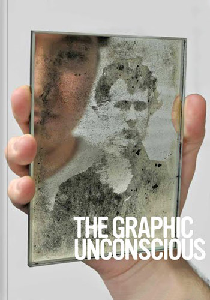
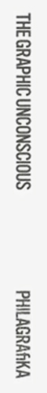
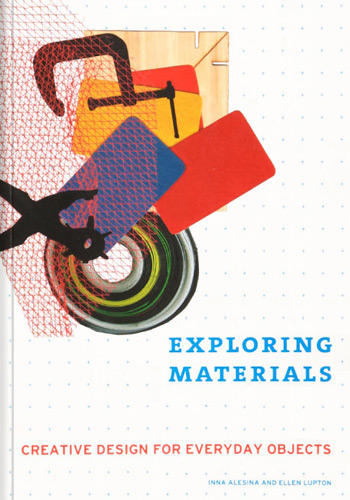
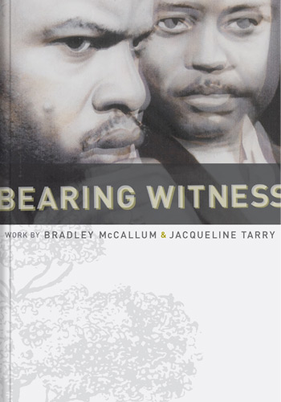
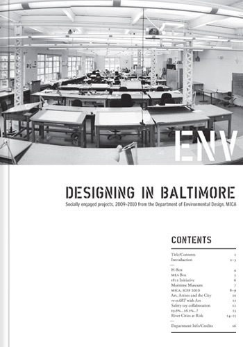

Experience
- RamWare LLC. Baton Rouge, LA
-
UX/UI Designer 2014 - Present
Built up the company’s brand through the design of promotional materials & websites, custom user interfaces and intuitive user experiences. Developed responsive web applications through custom CSS frameworks. Filled the role as: one part designer, one part web developer (coding HTML, CSS, SCSS, PHP & JavaScript) & one part problem-solver. Collaborated with clients, developers, designers, content managers & more to impact company goals and establish lasting client relationships.
- Philagrafika Philadelphia, PA
-
- Marketing Assistant 2011
- Catalog Intern 2010 - 2011
Began as an assistant to Philagrafika Programs Manager, filling roles such as: grant writing, editing, organizing & indexing the Philagrafika 2010 festival catalog. Moved on as an assistant to Marketing in designing branding and print/web promotional materials for various programs and exhibitions. Work included: creating a custom blog and web materials for the exhibition, Doing Time, and designing postcards and promo sheets for Philagrafika’s Invitational Portfolio and Signature Edition Series.
- MICA Baltimore, MD
-
- Curatorial/Design Intern 2010
- Freelance Graphic Designer 2009 - 2010
Collaborated with other designers and curators to develop solutions for citywide, client-based public art exhibition through MICA’s Center for Design Practice. The work included branding and marketing the exhibition, determing the body and role of the exhibition and pitching our work to key stakeholders. I also designed posters for the MICA Department of Art History’s ongoing lecture series, art@lunch, while acheiving my BFA (GPA 3.79).
Publications
-

- Philagrafika 2010: The Graphic Unconscious
-
Editor: Jennie Hirsh
Assistant to Philagrafika Program Manager, Caitlin Perkins and catalogue editor, Jennie Hirsh.
-

- Exploring Materials: Creative Design for Everyday Objects
-
Inna Alesina & Ellen Lupton
Work featured on page 150.
-

- Bearing Witness: Work by Bradley McCallum & Jacqueline Tarry
-
Editor: Jennie Hirsh
Writer & contributor. Short essays featured on pages 34, 54. View information about the exhibition and images the work here.
-

- ENV: Designing in Baltimore
-
Editor: Timmy Aziz
Work featured on pages 6, 7.